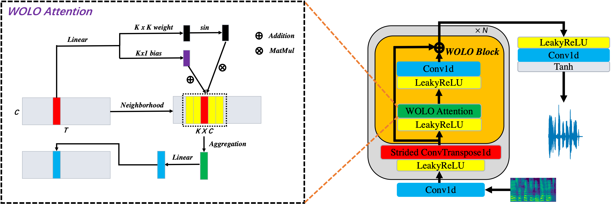

Abstract
Neural vocoders enhance speech synthesis quality in text-to-speech (TTS) and voice conversion (VC) systems. Recently, GAN-based neural vocoders such as Parallel WaveGAN, MelGAN, HiFiGAN, UnivNet, iSTFT, and BigVGAN have gained popularity due to their lightweight and parallel structure, enabling real-time synthesized waveforms with high fidelity, even on CPU. Despite their impressive performance, further reducing computational complexity and model size without compromising quality remains challenging. To address it, existing studies either generate intermediate lossy audio representations to reduce overall computational demand, but with the sacrifice of synthesis quality, or devise dynamic convolution architectures, novel GAN discriminators, or periodic activations to enhance the audio synthesis quality and generalization ability of the neural vocoders while maintaining the computational complexity and model size. To effectively balance computational complexity and synthesis quality, in this paper, we provide a novel perspective on the design of a GAN-based neural vocoder structure by crafting an effective and lightweight vocoder named WOLONet, which employs a novel lightweight block that for the first time integrates a location-varying and depthwise dynamic convolutional kernel with sinusoidally activated dynamic kernel weights, reducing computational complexity while preserving near-state-of-the-art (SOTA)'s synthesis. To evaluate the effectiveness and generalizability of our method, we compare our method with competitive GAN-based vocoders in both subjective and objective tests on various datasets. Experimental results demonstrate that WOLONet can achieve comparable or slightly better synthesis quality than existing SOTA vocoders (e.g., BigVGAN) while employing fewer parameters or computational costs.
Pipeline
Experimental Results
I. LJSPeech Results
- Dataset: LJSpeech [2]
| Sample 1 | Sample 2 | Sample 3 | Sample 4 | Sample 5 | |
|---|---|---|---|---|---|
| Ground truth |
| HiFiGAN [1] | |||||
|---|---|---|---|---|---|
| MelGAN [5] | |||||
| Parallel WaveGAN [6] | |||||
| UnivNet [7] | |||||
| iSTFTNet [3] | |||||
| BigVGAN [8] | |||||
| Vocos [10] | |||||
| WOLONet |
II. VCTK Results
- Dataset: VCTK [4]
| Sample 1 (p243) | Sample 2 (p248) | Sample 3 (p263) | Sample 4 (p281) | Sample 5 (p345) | |
|---|---|---|---|---|---|
| Ground truth |
| HiFiGAN [1] | |||||
|---|---|---|---|---|---|
| MelGAN [5] |
| Parallel WaveGAN [6] | |||||
|---|---|---|---|---|---|
| UnivNet [7] | |||||
| iSTFTNet [3] | |||||
| BigVGAN [8] | |||||
| WOLONet |
III. Opencpop Results
- Dataset: Opencpop [9]
| Sample 1 | Sample 2 | Sample 3 | Sample 4 | Sample 5 | |
|---|---|---|---|---|---|
| Ground truth |
| HiFiGAN [1] | |||||
|---|---|---|---|---|---|
| MelGAN [5] |
| Parallel WaveGAN [6] | |||||
|---|---|---|---|---|---|
| UnivNet [7] | |||||
| iSTFTNet [3] | |||||
| BigVGAN [8] | |||||
| WOLONet |
IV. Application to donwstream TTS
- Dataset: LJSpeech [2]
| Sample 1 | Sample 2 | Sample 3 | Sample 4 | Sample 5 | |
|---|---|---|---|---|---|
| HiFiGAN [1] |
| WOLONet |
|---|
Reference
- J. Kong, J. Kim, and J. Bae, “Hifi-gan: Generative adversarial networks for efficient and high fidelity speech synthesis,” Advances in Neural Information Processing Systems, vol. 33, pp. 17 022–17 033, 2020
- K. Ito, L. Johnson. The LJ Speech Dataset. 2017.
- T. Kaneko, K. Tanaka, H. Kameoka, S. Seki, iSTFTNet: Fast and Lightweight Mel-Spectrogram Vocoder Incorporating Inverse Short-Time Fourier Transform. ICASSP, 2022.
- J. Yamagishi, C. Veaux, K. MacDonald. CSTR VCTK Corpus: English Multi-speaker Corpus for CSTR Voice Cloning Toolkit. University of Edinburgh. The Centre for Speech Technology Research, 2017.
- Yang G, Yang S, Liu K, et al (2021b) Multi-band melgan: Faster waveform generation for high-quality text-to-speech. In: 2021 IEEE Spoken Language Technology Workshop (SLT), IEEE, pp 492–498
- R. Yamamoto, E. Song, and J.-M. Kim, “Parallel wavegan: A fast waveform generation model based on generative adversarial networks with multi-resolution spectrogram,” in ICASSP 2020-2020 IEEE International Conference on Acoustics, Speech and Signal Processing (ICASSP). IEEE, 2020, pp. 6199–6203.
- Jang W, Lim D, Yoon J, et al (2021) Univnet: A neural vocoder with multi-resolution spectrogram discriminators for high-fidelity waveform generation. In: Interspeech 2020
- gil Lee S, Ping W, Ginsburg B, et al (2023) BigVGAN: A universal neural vocoder with large-scale training. In: The Eleventh International Conference on Learning Representation
- Z. Zhang, Y. Zheng, X. Li, and L. Lu, “Wesinger: Dataaugmented singing voice synthesis with auxiliary losses,” arXiv preprint arXiv:2203.10750, 2022.
- Hubert Siuzdak. 2024. Vocos: Closing the gap between time-domain and Fourier-based neural vocoders for high-quality audio synthesis. In The Twelfth International Conference on Learning Representations.